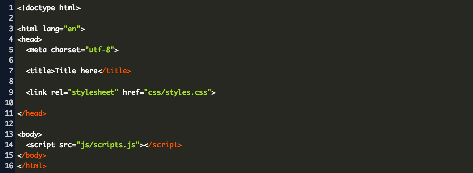

Writing things down helps us reduce stress and makes you feel more relaxed. We get a feeling of being in control of our actions.
Also, crossing items off your to-do list gives you a sense of accomplishment and progress. This helps us motivate ourselves and keep going when things get tough.
Let’s create a to do list for in just 3 simple steps with the help of JavaScript:
Step 1:
Create a HTML file in your VS code, and start your HTML file with a boiler plate.

Step 2:
Now create a CSS file for styling it.
Step 3:
Add JS code to it so as to complete the to do list.
if ( document.querySelector ( ' # newtask input ' ) .
value.length == 0 ) {
alert ( " Please Enter a Task " )
}
else
document.querySelector ( ' # tasks ' ) . innerHTML
+ =
< div class = " task " >
< span id = " taskname " >
$ { document.querySelector
( ' #newtask input ' ) . value }
else {
document.querySelector ( ' # tasks ' ) . innerHTML
+ =
< div class = " task " >
< span id = " taskname " >
$ { document.querySelector
( ' #newtask input ' ) . value }
< / span >
< button class = " delete " >
< i class = " far fa - trash - alt " > < /
i >
< / button >
< / div >
var current_tasks = document .
querySelectorAll ( " . delete " ) ;
for ( var i = 0 ; i < current_tasks.length ; iCA
current_tasks [ i ] .onclick = function
This.parentNodet
var tasks = document.querySelectorAll ( " .
task " ) ;
for ( var i = 0 ; i < tasks.length ; i ++ ) {
tasks [ i ] .onclick = function ( ) {
this.classList.toggle ( ' completed ' ) ;
C
}
I
CA
document.querySelector ( " #newtask input " )
1. document.querySelector() is used to select query from HTML
The querySelector() is a method of the Element interface. The querySelector() method allows you to select the first element that matches one or more CSS selectors.
2.The innerHTML property can be used to write the dynamic html on the html document.
It is used mostly in the web pages to generate the dynamic html such as registration form, comment form, links etc.
3.The alert() method in JavaScript is used to display a virtual alert box. It is mostly used to give a warning message to the users. It displays an alert dialog box that consists of some specified message (which is optional) and an OK button.
4.HTMLspan tag is used as a generic container of inline elements. It is used for styling purpose to the grouped inline elements (using class and id attribute or inline style).
The span tag does not have any default meaning or rendering.